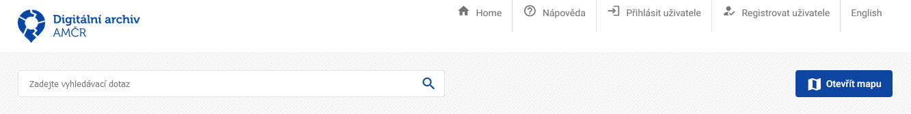
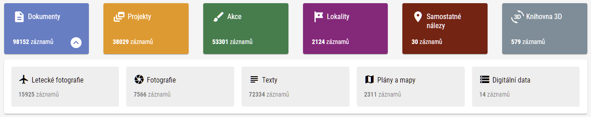
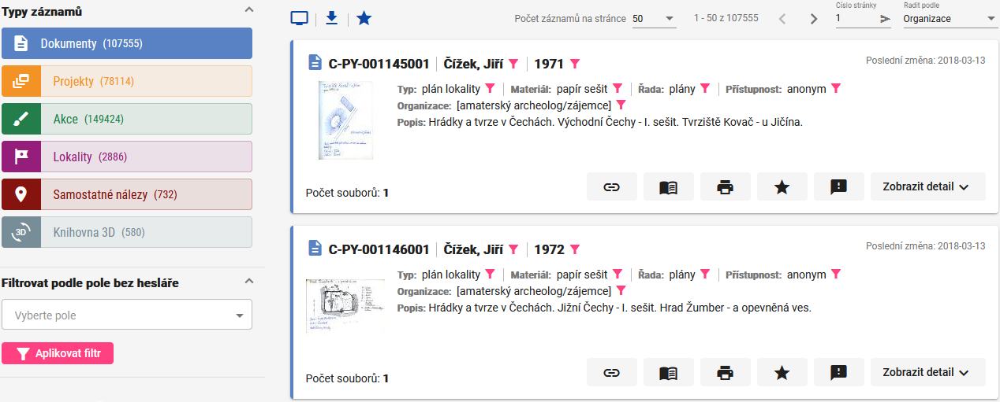
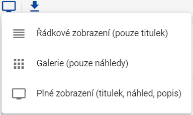
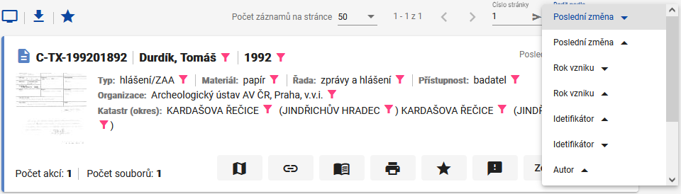
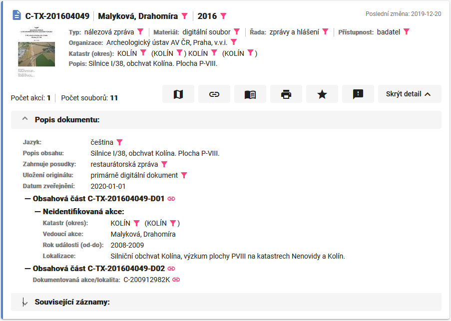
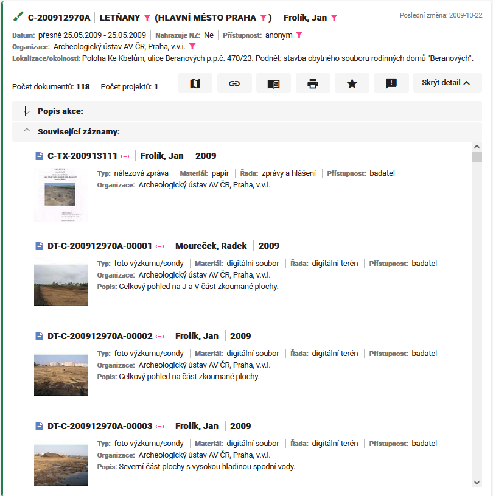
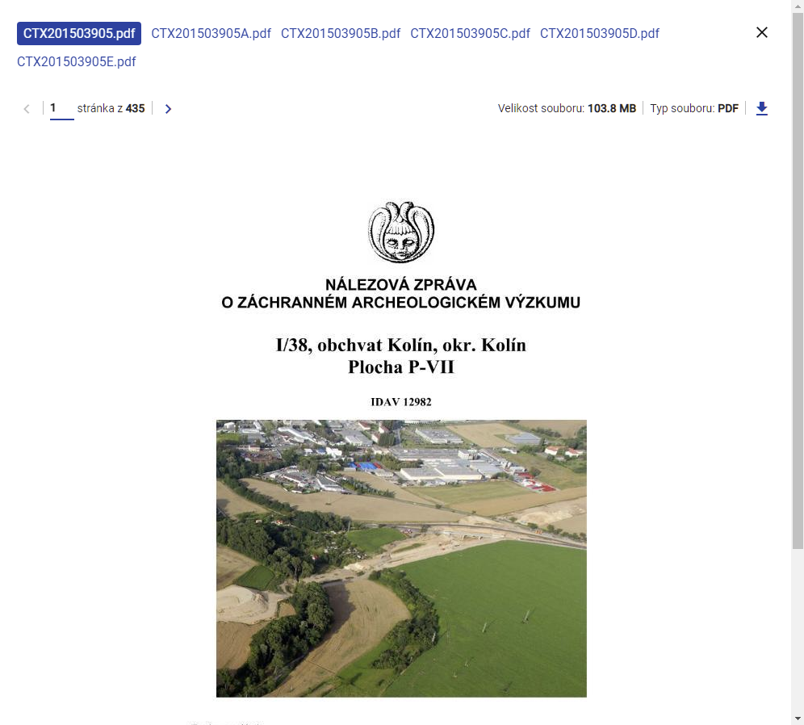
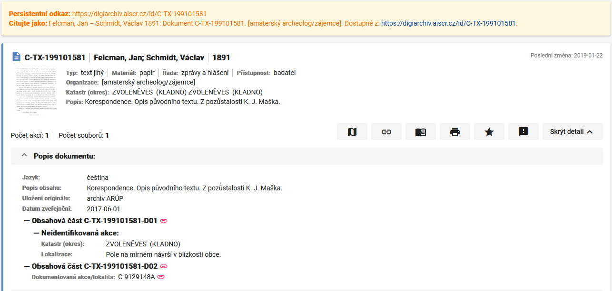
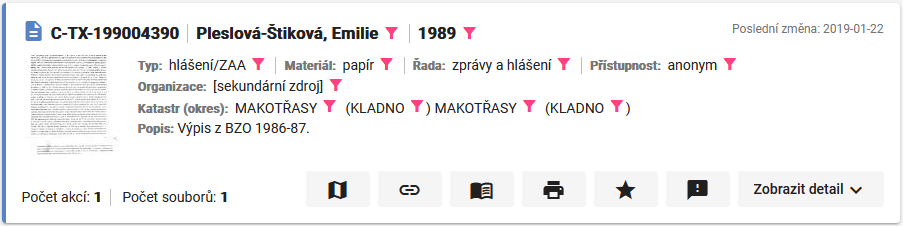

Digitální archiv AMČR
Uživatelský manuál
Homepage
Úvodní stránka Digitálního archivu AMČR slouží jako rozcestník, kde uživatel nalezne základní informace o webu, sekci s aktualitami, a také ovládací prvky pro zobrazení dat a pro přihlášení registrovaného uživatele.

V horní části stránky se nachází panel ovládacích prvků s tlačítky:
- Home – návrat na hlavní stránku;
- Nápověda – otevře tuto nápovědu;
- Přihlásit uživatele – registrovaní uživatelé se zde mohou přihlásit a získají tak přístup ke všem datům, podle své. uživatelské role;
- Registrovat uživatele – neregistrovaní uživatelé zde mohou provést registraci;
- English – přepnout do anglické verze webu.
Uživatelské účty
Registrovaní uživatelé se mohou přihlásit svým uživatelským jménem a heslem; údaje jsou shodné jako při užití aplikace AMČR. Neregistrovaní uživatelé se mohou registrovat kliknutím na možnost Registrovat uživatele, která otevře stránku s registračním formulářem.
Při registraci je nutné vyplnit jméno a příjmení uživatele, kontaktní informace, případně organizaci pod kterou uživatel náleží. Uživatel nemusí spadat pod žádnou organizaci a může vystupovat např. jako samostatný badatel či neuvádět příslušnost k organizaci. Při registraci uživatel také nastaví heslo pro přihlášení do systému. Všichni uživatelé vystupují v AMČR/Digitálním archivu pod svými skutečnými jmény, a je tedy třeba zadat jejich plné znění, a to včetně diakritiky (nikoliv např. přezdívku). Následně nový uživatel obdrží na uvedený e-mail ověřovací zprávu, ve které je třeba kliknout na zaslaný odkaz, a ověřit tak správnost registrace. Tímto vzniká uživatelský účet, který je z počátku neaktivní. Systém poté automaticky kontaktujte správce systému, který po kontrole údajů účet aktivuje a přidělí mu uživatelskou roli (děje se tak obvykle v běžné pracovní době). Po aktivaci obdrží uživatel informační e-mail a následně se může přihlásit.
Na následujícím odkazu Vám poskytujeme informace o zpracování osobních údajů registrovaných uživatelů.
Přístupnost záznamů
Digitální archiv AMČR obsahuje výhradně již archivované záznamy a dokumenty (viz procesní stavy), tj. záznamy, které byly uzavřeny a prošly kontrolou pověřených archivářů AMČR z Archeologických ústavů AV ČR v Praze a Brně.
Každý záznam v Digitálním archivu AMČR je označen v poli přístupnost odpovídající hodnotou podle toho, která skupina uživatelů může k datům přistupovat. Uživatelé vystupují v různých uživatelských rolích, podle přidělené úrovně oprávnění. Všichni uživatelé mají přístup k datům své úrovně a ke všem datům úrovní nižších. Neregistrovaní uživatelé vystupují s uživatelskou rolí Anonym (A) a mají přístup pouze k datům, která nejsou nijak chráněna. Všichni registrovaní uživatelé, kteří nespadají do kategorií s vyšším oprávněním, vystupují v uživatelské roli Badatel (B). Archeologové, kteří jsou autorizovanými členy organizací oprávněných k archeologickému výzkumu, vystupují v uživatelské roli Archeolog (C). V uživatelské roli Archivář (D) vystupují obvykle pracovníci Archeologických ústavů AV ČR.
Přístupnost jednotlivých typů záznamů ovlivňuje informace, které jsou viditelné pro uživatele s rozdílnými uživatelskými rolemi. Pro ty záznamy, které mají přístupnost vyšší, než kterou daný uživatel disponuje, se zobrazí jen některé informace. Oprávnění na úrovni archeolog (C) dovoluje prohlížet záznamy vlastní instituce i v případech, kdy ostatním archeologům nejsou přístupné.
Omezená přístupnost pro jednotlivé typy záznamů znamená:
- Dokumenty – není možné stahovat sobory ani prohlížet jejich náhledy.
- Projekty, Akce, Lokality – zobrazuje se jen základní popis bez podrobností a údajů o lokalizaci, nejde otevřít detail záznamu a záznamy nejsou viditelné v mapě.
- Samostatné nálezy – jsou skryty lokalizační údaje a lokalizace je zobrazována na úrovni okresu, záznamy nejsou viditelné v mapě.
- Knihovna 3D – bez omezení.
Fulltextové vyhledávání
Pro fulltextové vyhledávání lze použít pole Zadejte vyhledávácí dotaz.
Dotaz v tomto poli hledá výskyt jednotlivých slov (tokenů). Za oddělovač slov je považována vždy pouze mezera. Pro vyhledávání víceslovných výrazů, použijte uvozovky (např. „Palackého náměstí“). Lze využít hvězdičku jako zástupný znak pro libovolný řetězec (např. Roz*ky) a otazník jako zástupný znak pro právě jeden jiný znak (např. Roz??ky). Bližší popis chování vyhledávacího pole naleznete zde (využívání zástupných znaků) a zde (práce se speciálními znaky). Vyhledávací pole prohledává všechny popisné údaje v záznamech, nikoli však obsah jednotlivých textových dokumentů.
Přechod do mapového okna
Tlačítko Otevřít mapu slouží pro přesun do mapového okna. Práce v mapovém okně je podrobněji popsána níže.
Typy záznamů
Záznamy v Digitálním archivu AMČR jsou rozděleny do šesti základních typů. Dokumenty se dále dělí na pět podtypů. Pro každý typ záznamu je uveden jejich počet v Digitálním archivu. Kliknutím na položku přejdete na stránku s výsledky.

Stránka s výsledky
Po zvolení typu záznamu nebo použití vyhledávání na úvodní stránce se uživatel dostane na stránku s výsledky, kde je možné záznamy zobrazit a filtrovat. Filtry lze aplikovat na všechny typy záznamů průřezově, pokud jsou data pro zvolené záznamy dostupná. Zvolený typ záznamu určuje, jaké výsledky se zobrazují. I zde lze použít pole pro fulltextové vyhledávání či se přepnout do mapového okna (viz výše).

Na stránce s výsledky se po levé straně nachází facety s filtry pro přesnou specifikaci hledaných záznamů. V horní části panelu jsou zobrazeny typy záznamů a v závorce uvedený počet výsledků podle zadaného dotazu (bez aplikace filtru se zobrazuje celkový počet záznamů daného typu). Mezi typy záznamů lze libovolně přepínat a výsledky se zobrazí v okně výsledků v pravé části stránky.
V záhlaví části s výsledky jsou umístěna ovládací tlačítka pro volbu způsobu jejich zobrazení. Výsledky lze zobrazit buď v Plném zobrazení (titulek, náhled, popis), jako Galerii (pouze náhledy), či v Řádkovém zobrazení (pouze titulek). Vybrané záznamy lze exportovat jako seznam pomocí tlačítka Export. Takto lze exportovat maximálně 1000 záznamů, které se zobrazí jako tabulka na samostatné stránce. Záznamy je možné snadno pomocí nástrojů kopírovat/vložit přenést do tabulkového editoru (např. MS Excel, LibreOffice Spreadsheets apod.).

Počet zobrazených záznamů na stránce lze nastavit podle předvolených možností v rozsahu 5 až 100, lze přepínat mezi stránkami či se přepnout na konkrétní číslo stránky. Výsledky lze řadit podle zvolených parametrů. U každého ze záznamů je pak v pravém horním rohu uvedeno datum jeho poslední změny.

U jednotlivých výsledků lze vybrat z následujících voleb:
- Zobrazit na mapě – otevře mapové okno, pokud je to pro záznam relevantní.
- Odkazy – umožňuje získat permalink či odkaz na záznam v OAI-PMH API (více viz dále).
- BibTeX – vygeneruje bibliografický záznam v BibTeX, který vytvoří soubor s příponou .bib a který lze použít k tvorbě bibliografie v externích nástrojích (např. Zotero).
- Vytisknout – umožňuje tisk detailu daného záznamu.
- Uložit do oblíbených – označí záznam jako oblíbený (pouze pro přihlášené uživatele). Oblíbené záznamy je možné zobrazit pomocí totožného symbolu v záhlaví stránky s výsledky.
- Odeslat zpětnou vazbu – umožňuje odeslat komentář.
- Zobrazit detail – otevře detail záznamu.
Detail záznamu
U každého ze zobrazených výsledků lze Zobrazit detail záznamu, který obsahuje podrobný popis výsledku a odkazy na související záznamy. V detailu záznamu nalezneme podrobnější popis a další doplňující údaje (metadata) ve strukturované podobě. Pro přehlednost detailu záznamu lze jeho jednotlivé podčásti rozbalovat a skrývat vždy pomocí tučných nadpisů těchto podčástí.

U detailu projektu jsou u polí vázaných na řízené slovníky (hesláře) symboly filtrace . Po kliknutí na takto označené pole se konkrétní zvolené heslo použije jako aktivní filtr (k použití filtrů viz níže).
Každý identifikátor v detailu záznamu je opatřen ikonou odkazu , která umožňuje zobrazit samostatnou stránku persistentního odkazu se souvisejícími daty. Tato stránka má svůj trvalý odkaz a každý takovýto záznam je proto možné snadno přímo citovat. Zároveň je zde možné zobrazit záznam ve formátu XML přes proklik do OAI-PMH API (samotné rozhraní APi naleznete zde a návod zde).
Detail obsahuje též informace o souvisejících záznamech, jelikož jednotlivé typy záznamů jsou mezi sebou vzájemně provázány. Určitý dokument se tedy kupříkladu může vázat ke konkrétní lokalitě či akci. Tyto vazby fungují oběma směry a je tedy možné naopak u konkrétní akce zjistit, které dokumenty se k ní vážou. Přes identifikátor souvisejících záznamů se lze na tyto záznamy prokliknout a zjistit o nich podrobnosti.

U vyhledaných dokumentů, samostatných nálezů a v Knihovně 3D lze zobrazit náhled souvisejících souborů (kliknutím na náhled v okně výsledků) a soubory si prohlédnout. Každý záznam může mít i více než jeden související soubor, mezi nimiž jde přepínat v záhlaví prohlížečky. Soubory lze pomocí příslušného tlačítka stahovat . Generování náhledů souborů probíhá zpětně po jejich publikaci v Digitálním archivu. Pokud u souboru ještě není vygenerován jeho náhled, zobrazí se místo něj ikona souboru bez náhledu . Přes ni je ale možné se na dokument prokliknout a následně jej stáhnout v plné verzi. Možnost náhledu a stahování dokumentů závisí na uživatelské roli (viz výše). Při stahování a dalším využití dat dbejte na dodržení licenčních podmínek a při citaci využívejte doporučený postup.

Persistentí stránka záznamu
Pro každý záznam existuje jedinečný a stálý (persistentní) identifikátor. Ten společně se základní částí URL adresy (https://digiarchiv.aiscr.cz/id/...) tvoří persistentní odkaz. Pokud si uživatel uloží tento persistentní odkaz, může jej kdykoliv použít pro přístup ke konkrétnímu záznamu. Persistentní odkaz vede ke stránce, na které je vždy možné najít stejný záznam. Na tuto stránku se lze dostat vždy po kliknutí na symbol odkazu kdekoliv v rámci aplikace. Persistentní odkaz se nachází v ovládacích prvcích pod každým výsledkem či jeho popisem a u souvisejících záznamů po rozbalení nabídky Zobrazit detail . Na stránce persistentního odkazu je kromě samotného záznamu uvedeno znění persistentního odkazu a doporučená forma citace záznamu. Ze stránky persistentního odkazu je možné otevřít mapové okno a zobrazit polohu záznamu v mapě.

Filtrace
Filtrace podle polí bez heslářů
Pole Filtrovat podle pole bez hesláře slouží pro vyhledávání v polích, pro které nejsou nastaveny řízené slovníky (např. datum, poznámky, číselné údaje apod.). Po zvolení pole, podle kterého chceme vyhledávat, je třeba vyplnit hledanou hodnotu či rozsah hodnot (např. hledané rozpětí data výzkumu). Pro aplikaci zadaného filtru slouží tlačítko Aplikovat filtr.
Filtrace podle polí s hesláři (facety)
V případě polí, které jsou vázány na řízené slovníky (hesláře) vybíráme hodnoty ve filtrech z nabízených možností. Ve filtrech je možné vyhledávat přímo konkrétní heslo v konkrétním hesláři, nebo je možné použít pole Vyhledej pojem v heslářových filtrech .
V tomto poli lze zadat hledaný výraz; následně se zobrazí pouze filtry obsahující hesla, které danému výrazu odpovídají. Při vyhledávání není třeba zadat přesné znění hledaného hesla, ale výsledkem budou všechna slova obsahující zadaný textový řetězec (tedy např. začátek, kořen či konec slova). Pro každou z možností je v závorce uveden počet odpovídajících záznamů za současného nastavení. Hesla je možné řadit pomocí tlačítka Řadit dle podle počtu záznamů, textu hesla či jeho pořadí v hesláři (např. u hesláře období).
Aktivní filtry vidíme v horní části panelu nad typy záznamů, kde lze jednotlivé filtry pomocí křížku u dílčího filtru vypnout, případně zrušit všechny filtry pomocí křížku vpravo nahoře. Použité filtry lze libovolně kombinovat. Filtry lze aplikovat buď najednou výběrem z více filtrů, nebo lze další filtry, které se aplikují na již existující výsledky, přidávat. Stejně tak lze jednotlivé filtry i odebírat a výsledky se tomu dynamicky přizpůsobí.
Při přidávání filtrů a jejich parametrů systém automaticky přiřazuje mezi jednotlivá hesla v rámci téhož filtru logický operátor OR, tedy že výsledek MŮŽE obsahovat jeden z uvedených parametrů. Pokud chceme použít jiný druh logického operátoru, je třeba kliknout na ikonu v záhlaví řádku. Rozbalí se nám nabídka dalších možností, ve které lze zvolit též varianty, kdy záznam MUSÍ obsahovat daný parametr a kdy záznam NESMÍ obsahovat daný parametr (operátor NOT). Mezi jednotlivými skupinami hesel (dílčími facetami; např. areál, katastr…) je vždy operátor AND (a zároveň).
Použití filtrů je možné nejen z pásu s jednotlivými facetami, ale je možné aplikovat filtry také volbou ve výpisu výsledků. U hodnot použitelných pro filtraci je ikona pro aplikaci filtru . Vybraný parametr se následně přidá mezi aktivní filtry s podmínkou MUSÍ obsahovat.

Zobrazení v mapě
Do mapového okna se lze dostat buď pomocí tlačítka Otevřít mapu na horním panelu nebo pomocí tlačítka Zobrazit na mapě u konkrétního záznamu.
V mapovém okně máme po levé straně pomocí tlačítka | Filtrace/Výsledky možnost vysunout panel, kde lze zobrazit výsledky a pracovat s filtry. Použití filtrů je totožné jako v zobrazení stránky s výsledky. Panel je možné pro větší přehlednost skrýt |. Rovněž zde platí možnost použít fulltextové vyhledávání.
Většinu zobrazení zabírá mapové okno se zobrazenými výsledky. Pro pohyb v mapě slouží myš a pro změnu měřítka tlačítka či kolečko myši. Při změně měřítka mapy se mění i počet zahrnutých výsledků, které jsou zobrazeny v panelu po levé straně – výsledky vždy odpovídají aktuálnímu náhledu mapy. Mapu lze přiblížit též stiskem SHIFT + levého tlačítka myši + tažením; vyberete tak konkrétní oblast mapy pro přiblížení.

V základním zobrazení mapového okna je distribuce a hustota všech dat na zobrazeném území vyjádřena heat mapou (barevný gradient). Výsledky v aktuálním náhledu jsou zobrazeny v panelu po levé straně (při posunu mapy či změně měřítka se jejich počet změní na aktuální náhled, který zahrnuje i prostor pod panelem s výsledky).

Po přiblížení se k mapě na úroveň, kdy se zobrazuje méně než 10 000, ale více než 500 záznamů, již nevidíte heat mapu, ale záznamy se shluknou do skupin (clusterů) podle jejich prostorového rozmístění a jejich počtu (barevně a velikostně odlišené shluky).

Po dalším přiblížení nebo po kliknutí na vybraný shluk se shluk „rozpadne“ do jednotlivých záznamů. V tomto zobrazení již můžete vidět plné geometrie jednotlivých PIAN (tedy body, linie a polygony). Symboly reprezentují jejich definiční body.

Po kliknutí na záznam v seznamu výsledků se zobrazí podrobnosti ve stejném formátu, jako v běžném zobrazení záznamu na stránce s výsledky, a lokalizace záznamu v mapě se zvýrazní žlutě. Se záznamem je možné pracovat obdobně jako na stránce s výsledky (tedy např. zobrazit detail, náhled dokumentu, získat persistentní odkaz atd.).

Po kliknutí na symbol záznamu v mapě se tento záznam (obvykle jednotka PIAN použije jako parametr filtru a v okně výsledků se zobrazí pouze ty záznamy, které jsou s daným záznamem provázané (připojené záznamy lze vidět rovněž po najetí kurzorem na symbol záznamu jako tooltip). V některých případech, pokud je na prvek připojený jediný záznam, se zobrazí rovnou detail souvisejícího záznamu (např. pro samostatné nálezy a 3D modely).

Mimo použití filtrů lze vyhledávat také pomocí prostorového výběru, který lze aktivovat tlačítkem .
Vybraná oblast se zobrazí jako aktivní filtr (souřadnice rohů zvoleného území) a v mapovém okně i na stránce s výsledky se zobrazí pouze ty záznamy, které odpovídají danému prostorovému výběru. Po zavření mapového okna a návratu k zobrazení výsledků zůstávají všechny použité filtry nadále aktivní a s výsledky můžeme dále pracovat v tomto zobrazení.

Po kliknutí na ikonu v pravém horním rohu mapového okna je možné změnit mapový podklad. Na výběr je ČÚZK - Základní mapa ČR, ČÚZK - Ortofotomapa a ČÚZK - Stínovaný reliéf 5G a dále OpenStreetMap.. K těmto podkladovým mapám je dále možné jako poloprůhledný překryv doplnit mapu ČÚZK - Katastrální území a ČÚZK - Katastrální mapu (dostupné podle zvoleného měřítka - mapu je nutno dostatečně přiblížit).
Vybrané záznamy je možné pomocí tlačítka Exportovat seznam exportovat a to ve formátech GML, WKT a GeoJSON, se kterými je možné dále pracovat např. v prostředí GIS (prostorové údaje v těchto formátech jsou uloženy v jednom z polí exportní tabulky; samostatně jsou vždy uváděny též souřadnice centroidu ve WGS-84). Maximální počet exportovaných záznamů je omezen na 1000 řádků.